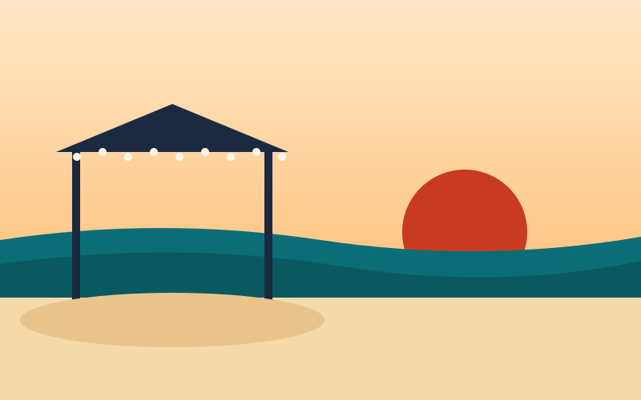

Venues
Three venues within a short walk of each other along the beachfront: sand and sea by day, club floor by night.
Venue map
A schematic map, not to scale. Select a venue to see its access facts and its sessions for each day.
No venue selected yet.
Arena Stage
Outdoor · capacity 800
Passeig de la Ola 1
46011 Valencia
Comunitat Valenciana- Step-free: Yes
- Accessible toilets: Yes
- Quiet space: No
A firm boardwalk leads from the promenade to the edge of the dance floor. The sand floor itself is soft.
Friday 25 June (7 sessions)
Saturday 26 June (9 sessions)
Sunday 27 June (9 sessions)
Full page for Arena Stage
Pabellón Brisa
Indoor · capacity 350
Carrer del Salitre 14
46011 Valencia
Comunitat Valenciana- Step-free: Yes
- Accessible toilets: Yes
- Quiet space: Yes
Step-free entrance on the street side. A quiet room is open all day next to the main floor.
Friday 25 June (7 sessions)
Saturday 26 June (9 sessions)
Sunday 27 June (9 sessions)
Full page for Pabellón Brisa
Marea Club
Indoor · capacity 600
Carrer de la Marinada 8
46011 Valencia
Comunitat Valenciana- Step-free: Yes
- Accessible toilets: Yes
- Quiet space: Yes
A ramp at the side entrance replaces the three front steps. Ear protection is free at the bar. A chill room is open all night.
Friday 25 June (5 sessions)
Saturday 26 June (6 sessions)
Sunday 27 June (4 sessions)
Full page for Marea Club
Walking between venues
- Arena Stage to Pabellón Brisa: about 130 m, a 2 minute walk
- Arena Stage to Marea Club: about 240 m, a 3 minute walk
- Pabellón Brisa to Marea Club: about 280 m, a 4 minute walk
The three venues

Outdoor · capacity 800 · 25 sessions
A sand-floor stage on the beachfront. It hosts the daytime sand workshops, the sunset socials and the open-air shows.
Passeig de la Ola 1
46011 Valencia
Comunitat Valenciana- Step-free
- Yes
- Accessible toilets
- Yes
- Quiet space
- No
Venue details See sessions here

Indoor · capacity 350 · 25 sessions
An air-conditioned seaside pavilion with a sprung wooden floor. It hosts most workshops, the evening practica socials and the pavilion showcases.
Carrer del Salitre 14
46011 Valencia
Comunitat Valenciana- Step-free
- Yes
- Accessible toilets
- Yes
- Quiet space
- Yes
Venue details See sessions here

Indoor · capacity 600 · 15 sessions
The indoor club for the main night socials. It has a large floor, a stage for live acts and two bars. Late sets run until the early morning.
Carrer de la Marinada 8
46011 Valencia
Comunitat Valenciana- Step-free
- Yes
- Accessible toilets
- Yes
- Quiet space
- Yes
Venue details See sessions here